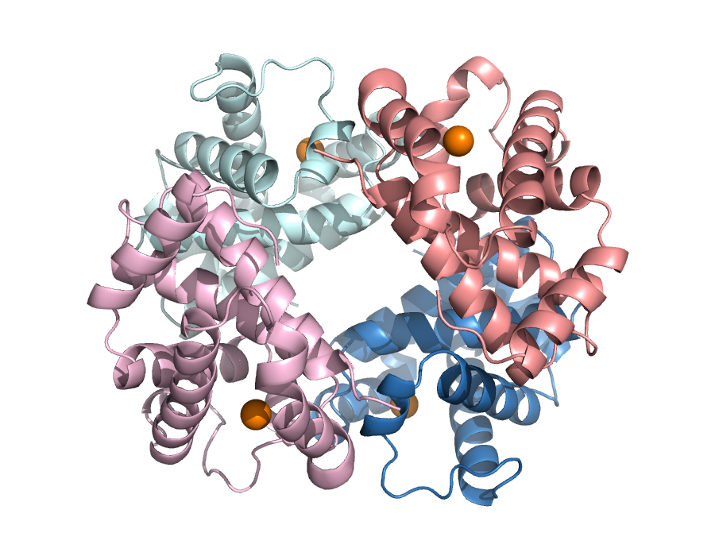
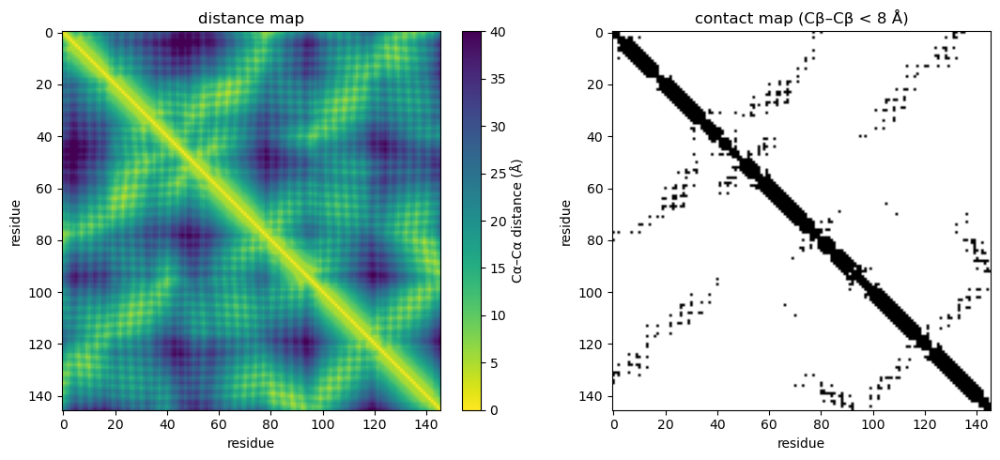

# Install the libraries Colab does not come with (does nothing if they are already installed)
import importlib.util, subprocess, sys
for module, package in [("Bio", "biopython"), ("pymol", "pymol-open-source-whl"), ("tmtools", "tmtools"), ("matplotlib", "matplotlib")]:
if importlib.util.find_spec(module) is None:
subprocess.run([sys.executable, "-m", "pip", "install", "-q", package], check=True)Session 6 — Protein Structure in code
This notebook fetches two real crystal structures of human hemoglobin — the deoxy (“T”, tense) state 2HHB and the oxy (“R”, relaxed) state 1HHO — and uses them to make the four levels of protein structure, and the sequence-to-structure prediction problem, concrete: primary structure is just the residue list; secondary structure is computed here from the coordinates with PyMOL and compared with the PDB entry’s own annotation; quaternary structure is measured directly as a real distance in 3D space, and that distance is shown to actually change between the two structures — the real geometric signature of hemoglobin’s allosteric mechanism. Along the way it turns the structure into a distance map and a contact map, and compares sequence alignment with structure alignment for β-globin and five other proteins, from close relatives to an unrelated fold.
Structure parsing and geometry use Biopython (Bio.PDB); secondary-structure assignment and rendering use PyMOL (open-source) as a Python library, without a window; structure alignment uses TM-align through the tmtools package.
import subprocess
import itertools
import os
import numpy as np
from Bio.PDB import PDBList, PDBParser
PDB_IDS = ["2hhb", "1hho"] # 2HHB = deoxy/T-state, 1HHO = oxy/R-state
pdbl = PDBList()
paths = {pdb_id: pdbl.retrieve_pdb_file(pdb_id, pdir=".", file_format="pdb") for pdb_id in PDB_IDS}
pathsDownloading PDB structure '2hhb'...
Downloading PDB structure '1hho'...{'2hhb': './pdb2hhb.ent', '1hho': './pdb1hho.ent'}Primary and quaternary structure: what’s actually in the file
Hemoglobin is a heterotetramer: two copies of an alpha chain and two copies of a beta chain (the same beta chain that is this course’s running example, HBB, first met on Session 3). Parsing the structure and just counting residues per chain already shows primary structure (the residue sequence itself) and sets up quaternary structure (how many chains, and which ones are identical).
parser = PDBParser(QUIET=True)
structures = {pdb_id: parser.get_structure(pdb_id, paths[pdb_id]) for pdb_id in PDB_IDS}
for pdb_id in PDB_IDS:
print(f"--- {pdb_id.upper()} ---")
for chain in structures[pdb_id][0]:
protein_residues = [r for r in chain if r.id[0] == " "]
hetero = sorted({r.get_resname() for r in chain if r.id[0] != " " and r.get_resname() != "HOH"})
if protein_residues:
print(f" chain {chain.id}: {len(protein_residues)} residues, ligands={hetero}")--- 2HHB ---
chain A: 141 residues, ligands=['HEM']
chain B: 146 residues, ligands=['HEM', 'PO4']
chain C: 141 residues, ligands=['HEM']
chain D: 146 residues, ligands=['HEM', 'PO4']
--- 1HHO ---
chain A: 141 residues, ligands=['HEM', 'OXY', 'PO4']
chain B: 146 residues, ligands=['HEM', 'OXY']2HHB has all four chains (A, B, C, D) in the file directly. 1HHO’s file only contains one alpha/beta pair (A, B) — the crystal’s asymmetric unit — plus a REMARK 350 symmetry record that generates the other half of the biological tetramer. That is what a rigid-body transformation (a rotation + translation, no shape change) is for, and it matters again below when measuring a quaternary distance in 1HHO.
Both structures agree: two 141-residue alpha chains, two 146-residue beta chains, each carrying one heme group (HEM) — consistent with the real human alpha- and beta-globin sequences.
Secondary structure: two ways to assign it
The PDB entry’s own annotation (available from EBI’s PDBe API, and used in Session 7) puts 117 of the 146 residues of HBB’s chain in alpha helices, with zero beta strands. Here the same question is answered a different way: PyMOL’s own built-in secondary-structure assignment algorithm (dss, run headlessly here, not the PDBe API) is applied directly to 2HHB’s beta chain.
from pymol import cmd # PyMOL as a Python library, no window needed
cmd.load(paths["2hhb"], "hb")
cmd.dss("hb") # PyMOL's own secondary-structure assignment
ss_list = []
cmd.iterate("hb and chain B and polymer and name CA",
"ss_list.append(ss)", space={"ss_list": ss_list})
total = len(ss_list)
helix = sum(1 for s in ss_list if s == "H")
strand = sum(1 for s in ss_list if s == "S")
print("TOTAL", total)
print("HELIX", helix)
print("STRAND", strand)
print("PCT_HELIX", round(100 * helix / total, 1))TOTAL 146
HELIX 118
STRAND 0
PCT_HELIX 80.8PyMOL’s dss finds 118 of 146 residues (80.8%) in a helix and 0 in a strand — a different algorithm, run on the coordinates directly rather than through PDBe’s own annotation pipeline, and it lands on essentially the same answer as the PDB entry’s annotation (117/146, ≈80%, 0 strands). The one-residue difference is just where the two algorithms draw a helix boundary at its edges — both agree HBB is an almost purely alpha-helical protein with no beta content at all, now confirmed two independent ways.
Rendering the tertiary/quaternary structure
PyMOL, used as a Python library without a window, can also render an actual image of the tetramer: cartoon representation (so alpha helices are visible directly, matching the dss numbers above), one color per chain, and the four heme iron atoms shown as spheres.
cmd.hide("everything")
cmd.show("cartoon", "polymer")
cmd.show("spheres", "resn HEM and name FE")
cmd.color("skyblue", "chain A")
cmd.color("salmon", "chain B")
cmd.color("palecyan", "chain C")
cmd.color("lightpink", "chain D")
cmd.color("orange", "resn HEM and name FE")
cmd.bg_color("white")
cmd.set("ray_opaque_background", 0)
cmd.orient("polymer")
cmd.png("_session06_2hhb_render.png", width=900, height=700, dpi=150, ray=1)
from IPython.display import Image
Image("_session06_2hhb_render.png")
Two alpha chains (blue/cyan), two beta chains (salmon/pink), all four almost entirely built from alpha helices — what the dss numbers above said — arranged around each other with four heme groups (orange spheres) roughly at the corners. That spatial arrangement of four folded chains with respect to each other is quaternary structure.
A structure as a matrix: distance and contact maps
A list of 3D coordinates can be turned into a different representation: the distance between every pair of residues. For a chain of \(L\) residues this is an \(L \times L\) distance map. Thresholding it (here: Cβ atoms closer than 8 Å) gives a contact map, the definition used again in Sessions 10 and 12. Neither depends on how the protein is oriented in space, which is what makes them useful for comparing structures.
import matplotlib.pyplot as plt
def chain_coords(structure, chain_id, atom="CA"):
xyz = []
for res in structure[0][chain_id]:
if res.id[0] == " ":
xyz.append(res[atom].coord if atom in res else res["CA"].coord) # glycine has no CB
return np.array(xyz)
def distance_map(xyz):
return np.linalg.norm(xyz[:, None, :] - xyz[None, :, :], axis=-1)
d_ca = distance_map(chain_coords(structures["2hhb"], "B", "CA"))
contacts = distance_map(chain_coords(structures["2hhb"], "B", "CB")) < 8.0
L = len(d_ca)
iu = np.triu_indices(L, k=6) # pairs at least 6 apart in sequence
print(f"beta chain: {L} residues, {contacts[iu].sum()} contacts between residues at least 6 apart in sequence")
fig, ax = plt.subplots(1, 2, figsize=(11, 5))
im = ax[0].imshow(d_ca, cmap="viridis_r", vmax=40)
fig.colorbar(im, ax=ax[0], fraction=0.046, label="Cα–Cα distance (Å)")
ax[0].set_title("distance map")
ax[1].imshow(contacts, cmap="Greys")
ax[1].set_title("contact map (Cβ–Cβ < 8 Å)")
for a in ax:
a.set_xlabel("residue"); a.set_ylabel("residue")
plt.tight_layout(); plt.show()beta chain: 146 residues, 197 contacts between residues at least 6 apart in sequence
The thick band along the diagonal is each helix touching itself (residue \(i\) is always close to \(i \pm 1, \dots, i \pm 4\)). The off-diagonal stripes are pairs of helices packed against each other: long-range contacts between residues far apart in sequence but close in space.
Sequence alignment versus structure alignment
A sequence alignment decides which residues correspond from the sequences alone. A structure alignment (here TM-align) decides from the 3D coordinates. Below, β-globin is compared with five proteins, from a close paralog to an unrelated fold. For each we report:
- the TM-score and RMSD of the structure alignment;
- the sequence identity over the structurally aligned residues;
- the score of the best sequence-only local alignment (Smith–Waterman, BLOSUM62), next to the scores of 200 alignments against shuffled versions of the same sequence: is there any sequence signal at all?
- how many of the structurally aligned residue pairs the sequence alignment also pairs up: does sequence alone get the correspondence right?
import random, requests
from Bio import Align
from Bio.Align import substitution_matrices
from Bio.PDB import PDBIO, Select
from tmtools import tm_align
from tmtools.io import get_structure, get_residue_data
COMPARE = [("2HHB", "A", "alpha-globin (human)"),
("3RGK", "A", "myoglobin (human)"),
("1OJ6", "A", "neuroglobin (human)"),
("1IDR", "A", "truncated hemoglobin N (M. tuberculosis)"),
("1EMA", "A", "GFP (jellyfish), unrelated fold")]
class OneChain(Select):
def __init__(self, chain_id): self.chain_id = chain_id
def accept_chain(self, chain): return chain.id == self.chain_id
def accept_residue(self, res): return res.id[0] == " "
def chain_file(pdb_id, chain_id):
"""Download a PDB entry and save one chain (protein residues only) as its own file."""
full = f"{pdb_id}.pdb"
if not os.path.exists(full):
r = requests.get(f"https://files.rcsb.org/download/{pdb_id}.pdb", timeout=30)
r.raise_for_status()
open(full, "w").write(r.text)
out = f"{pdb_id}_{chain_id}.pdb"
io = PDBIO(); io.set_structure(parser.get_structure(pdb_id, full)); io.save(out, OneChain(chain_id))
return out
def load(path):
coords, seq = get_residue_data(next(get_structure(path).get_chains()))
return coords, seq
def aligned_pairs(a, b):
"""Residue-index pairs (i, j) matched in two gapped alignment strings."""
pairs, i, j = set(), 0, 0
for x, y in zip(a, b):
if x != "-" and y != "-":
pairs.add((i, j))
i += x != "-"; j += y != "-"
return pairs
aligner = Align.PairwiseAligner(mode="local", substitution_matrix=substitution_matrices.load("BLOSUM62"),
open_gap_score=-11, extend_gap_score=-1)
hbb_coords, hbb_seq = load(chain_file("2HHB", "B"))
random.seed(0)
print(f"{'compared with beta-globin':<42}{'TM':>6}{'RMSD':>6}{'seq id':>8}{'SW score':>10}{'shuffled max':>14}{'agree':>7}")
for pdb_id, chain_id, name in COMPARE:
coords, seq = load(chain_file(pdb_id, chain_id))
tm = tm_align(coords, hbb_coords, seq, hbb_seq)
struct = aligned_pairs(tm.seqxA, tm.seqyA)
ident = sum(seq[i] == hbb_seq[j] for i, j in struct) / len(struct)
best = aligner.align(seq, hbb_seq)[0]
seq_pairs = {(s1 + k, s2 + k) for (s1, e1), (s2, e2) in zip(*best.aligned) for k in range(e1 - s1)}
shuffled = [aligner.score("".join(random.sample(seq, len(seq))), hbb_seq) for _ in range(200)]
print(f"{name:<42}{tm.tm_norm_chain2:>6.2f}{tm.rmsd:>6.1f}{ident:>8.0%}{best.score:>10.0f}"
f"{max(shuffled):>14.0f}{len(struct & seq_pairs) / len(struct):>7.0%}")compared with beta-globin TM RMSD seq id SW score shuffled max agree
alpha-globin (human) 0.88 1.4 43% 288 43 95%
myoglobin (human) 0.91 1.5 25% 111 46 97%
neuroglobin (human) 0.82 2.0 22% 89 41 66%
truncated hemoglobin N (M. tuberculosis) 0.57 3.2 16% 28 49 0%
GFP (jellyfish), unrelated fold 0.33 5.1 6% 25 50 0%TM-scores are normalized by the length of β-globin. Read the table from top to bottom:
- Alpha-globin and myoglobin: the sequence alignment score is far above anything the shuffled sequences reach, and the sequence alignment pairs up almost exactly the same residues as the structure alignment.
- Neuroglobin: still a clear sequence signal, but only about two thirds of the residue pairs agree; the sequence alignment has put gaps in the wrong places.
- Truncated hemoglobin: the sequence alignment scores no better than shuffled sequences, and it pairs up none of the right residues. The structure alignment still finds a shared fold (TM-score well above GFP’s) over more than 100 residues: structure is more conserved than sequence.
- GFP: a low TM-score; the structures have nothing in common.
Measuring a real quaternary-structure distance
A concrete geometric property, rather than just a picture: the distance between the iron atoms of the two beta-chain hemes. This distance is the classic textbook signature of hemoglobin’s allosteric mechanism (Baldwin & Chothia, 1979) — it should be larger in the deoxygenated (“T”, tense) state than in the oxygenated (“R”, relaxed) state, since the whole point of the T→R quaternary shift is that the two beta chains move closer together as oxygen binds.
First, all six pairwise Fe–Fe distances within 2HHB (T-state), which is small enough to have all four chains directly in one file:
fe_2hhb = {}
for chain in structures["2hhb"][0]:
for res in chain:
if res.get_resname() == "HEM":
fe_2hhb[chain.id] = res["FE"].get_coord()
print("2HHB (deoxy, T-state) pairwise Fe-Fe distances:")
for a, b in itertools.combinations(sorted(fe_2hhb), 2):
d = np.linalg.norm(fe_2hhb[a] - fe_2hhb[b])
print(f" {a}-{b}: {d:.2f} A")
beta_beta_T = np.linalg.norm(fe_2hhb["B"] - fe_2hhb["D"])
print(f"\nBeta-beta Fe-Fe distance, T-state (2HHB): {beta_beta_T:.2f} A")2HHB (deoxy, T-state) pairwise Fe-Fe distances:
A-B: 36.49 A
A-C: 34.16 A
A-D: 24.35 A
B-C: 24.26 A
B-D: 39.51 A
C-D: 36.42 A
Beta-beta Fe-Fe distance, T-state (2HHB): 39.51 A1HHO’s file only has one alpha/beta pair, so getting the other beta chain means actually applying the rigid-body transformation from the file’s REMARK 350 record — the same kind of operation, in miniature, that structure-comparison tools like RMSD or TM-align (mentioned on the book page) use to superimpose whole structures onto each other.
fe_1hho = {}
for chain in structures["1hho"][0]:
for res in chain:
if res.get_resname() == "HEM":
fe_1hho[chain.id] = res["FE"].get_coord()
# REMARK 350 BIOMT for the second copy in 1HHO's biological tetramer:
# swap x and y, negate z, no translation.
R = np.array([[0, 1, 0],
[1, 0, 0],
[0, 0, -1]])
fe_B = np.array(fe_1hho["B"], dtype=float)
fe_B_symmetry_mate = R @ fe_B
beta_beta_R = np.linalg.norm(fe_B - fe_B_symmetry_mate)
print(f"Beta-beta Fe-Fe distance, R-state (1HHO): {beta_beta_R:.2f} A")
print(f"Beta-beta Fe-Fe distance, T-state (2HHB): {beta_beta_T:.2f} A")
print(f"Contraction going deoxy (T) -> oxy (R): {beta_beta_T - beta_beta_R:.2f} A")Beta-beta Fe-Fe distance, R-state (1HHO): 34.62 A
Beta-beta Fe-Fe distance, T-state (2HHB): 39.51 A
Contraction going deoxy (T) -> oxy (R): 4.89 ATwo independently solved crystal structures of the same protein, in its two functional states, show the two beta hemes roughly 5 Å closer together in the oxygenated state than in the deoxygenated one — a real, measured instance of the T→R quaternary transition, not just a textbook diagram. This is also the kind of number a quaternary structure-comparison metric (Ligand RMSD, interface RMSD, …) is built to summarize systematically across many structures at once, rather than one hand-picked distance at a time.
Try it yourself
Some things to change and re-run:
- Measure the alpha-alpha Fe-Fe distance instead (
fe_2hhb["A"]vsfe_2hhb["C"]) — does it also change between the two states, and if so, by how much compared to the beta-beta distance? - Fetch a different pair of PDB entries for the same T/R comparison — try
2hhb(T) against1bbb(R) instead of1hho, and see whether the beta-beta contraction is consistent. - Change the PyMOL render script above to color by secondary structure (
cmd.color("red", "ss H"),cmd.color("yellow", "ss S")) instead of by chain, to see the helices highlighted directly on the structure.
import glob
# scratch files: the rendered image, and the downloaded and single-chain PDB files of the comparison
for f in ["_session06_2hhb_render.png"] + glob.glob("????.pdb") + glob.glob("????_?.pdb"):
if os.path.exists(f):
os.remove(f)(Scratch files this notebook wrote to disk are cleaned up above; the .ent files of 2HHB and 1HHO are left in place so re-running the notebook doesn’t re-download them.)